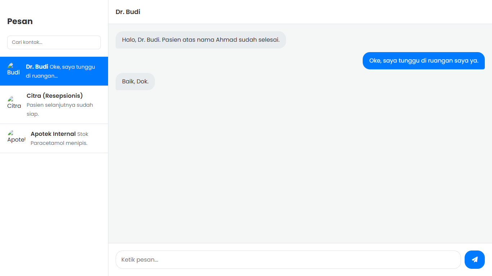

Antarmuka Chat (IM)
Tentang Template Ini
Ini adalah template komponen "inovatif" yang meniru antarmuka aplikasi obrolan (Instant Messaging) modern seperti WhatsApp Web atau aplikasi support chat.
Tantangan utama dari template ini adalah menata "gelembung obrolan" (chat bubbles) agar bisa rata kiri (diterima) dan rata kanan (terkirim) menggunakan CSS Flexbox (`align-self`). Template ini juga menyertakan simulasi pengiriman pesan menggunakan Vanilla JavaScript.
Fitur Utama:
- Layout 2 Kolom Klasik (Daftar Kontak & Jendela Obrolan)
- Gelembung Obrolan (Chat Bubbles) Rata Kiri/Kanan
- Layout Penuh (100vh) yang Umum untuk Aplikasi Web
- Kontainer Pesan yang Dapat Di-scroll
- Simulasi Kirim Pesan dengan JavaScript
- Desain Bersih dan Responsif Sederhana (Menyembunyikan kontak di mobile)
Teknologi yang Digunakan:
- HTML5
- CSS3 (Flexbox)
- Vanilla JavaScript (DOM Manipulation)